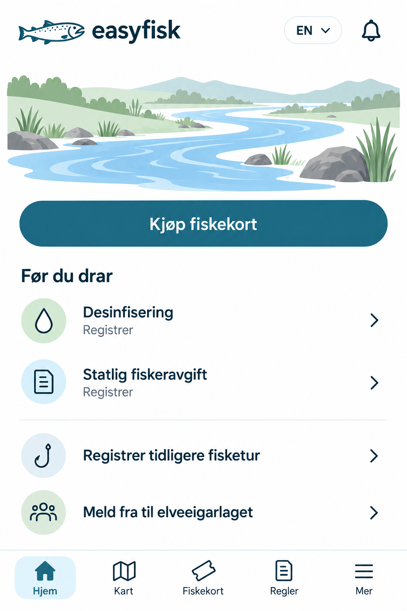
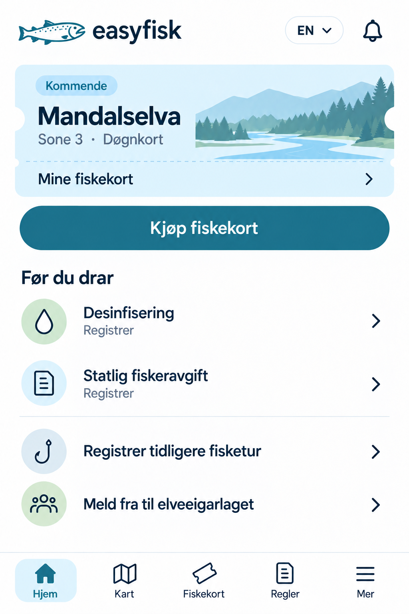

EasyFisk · Samlet designforslag
Hjemskjermen, satt sammen fra valgene dine
Nytt: se alle sidene i denne stilen, med den nye logoen
Én stil, vist før og etter kjøp av fiskekort. Elveblått og petrol knytter illustrasjon, billett og knapper sammen. Lyse salviegrønne ikonsirkler gir en rolig variasjon.
Trykk på bildene for full størrelse. Dette er bilder av et designforslag; knappene inne i bildene er ikke interaktive.
Før du har kjøpt fiskekort
Elva fyller bredden over kjøpsknappen, uten overskrift eller ekstra tekst.

Når du har kjøpt fiskekort
Billetten erstatter elveillustrasjonen. Kjøpsknappen er fortsatt tilgjengelig, og resten av hjemskjermen følger samme stil.

Valgene dine i én helhet
- Billett med innhakk, stiplet linje og landskap, uten «Din lommebok».
- Elveillustrasjon uten tekst når du ikke har kjøpt kort.
- Matchende rader med lyse ikonsirkler for registrering og de to nederste handlingene.
- Fiskekrok ved «Registrer tidligere fisketur».
- Brettet kartikon på «Kart», og lys markering av valgt side.
- Lakselogo med karakteristisk kroket kjeve, sammen med språkvalg og varselbjelle.
Dette er en visuell skisse. Lesbarhet, tekstforstørrelse, trykkflater og skjermleser må kontrolleres i det ferdige grensesnittet.
Bildene er laget med innebygd imagegen. Se bildeinstruksjonene (engelsk).